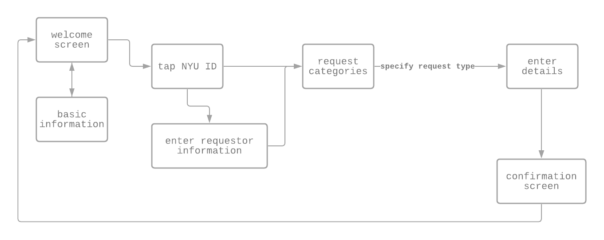

Tools
Adobe Xd
Photoshop
Google Forms
Date
Spring 2020
Role
Solo Designer
& Researcher
01 - Project Brief
As a part-time Audio/Visual Technician, my job description involves responding to calls for equipment repair and maintenance, as well as juggling scheduled proactive support for classes and events. While I understood how my department operated, I was curious about how my school’s facilities were repaired and maintained - as well as how students and faculty felt about it.
Thus, I began to investigate connections between my department and Client Services to better understand the needs of those receiving and taking action on the requests.
02 - Interviews
I reached out to a manager at Client Services to assess their processing of facility maintenance and repair requests. Because I was unsure of their availability in my constrained time limit (1 week), I also went ahead and discussed repair handling with managers in my department (Media Services) to find the most efficient processing method for requests. Thankfully, I received a timely response from Client Services, so in total, I was able to speak with four users on the service side.
Early brainstorming
Additionally, I interviewed the client side (students and faculty at my school) to figure out how they filed requests for facilities repairs. After realizing that in person interviews were a bit limiting in quantity, I also conducted a survey and received responses from 15 students and 3 professors.
Users felt there was a lack of clarity in the process of filing reports on campus facility disfunction. This led to frustrations with how the school was being maintained, which turned into apathy for its upkeep.
Some key findings from my interview with Client Services:
- Request intake methods included phone call email, online form requests(from website)
- In terms of priority, urgent needs should be requested through the phone
- however, any other requests MUST be received in writing to ensure all details are correct.
03 - Minimum Viable Product
From the research I conducted, I found that users on the client-side (students and faculty) valued convenience and simplicity - as they weren't particularly experienced in the nature of the problems encountered.
I decided to design an interface for a touch screen kiosk that accepts and sends requests for facility repair and maintenance.
04 - Site Map

05 - Low Fidelity Sketch
With the quick turnaround needed for this project, I took to the whiteboard to sketch out some rough mockups.

06 - High Fidelity Mockup
 Link to annotated prototype
Link to annotated prototype
07 - Next Steps
Given I had a heavy work week at school, I would have loved to spend more time with user-testing. If I were to continue this exercise, I’d test the prototype on a touch screen panel or tablet, observe user interactions with it, and re-iterate and refine my interface. I would also propose a lower-budget method - a Client Services website redesign + QR codes around the school to draw more awareness of the site - as installing touch panels in every classroom or floor would not be a cost-effective solution.